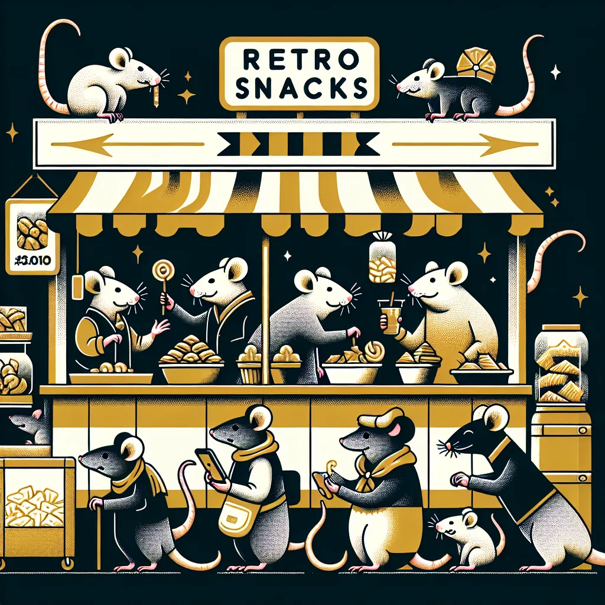

{kind=link}
{kind=link}
In the heart of bustling Ratopolis, a culinary trend is making waves, with old-school rat snacks experiencing a surprising comeback. Across the city, both older and younger rats are flocking to local markets and specialty shops to get a taste of these nostalgic nibbles.
Walking through the vibrant alleyways of Ratopolis' food district, an intriguing aroma fills the air—cheese puffs, nut clusters, and honey-dipped grain bars—a blast from the past. These snacks evoke fond memories for many, but what’s causing this nostalgic revival? The magic lies in a blend of cultural heritage, comfort food cravings, and a dash of culinary innovation.
One key player riding the wave of this trend is renowned Chef Whiskerino. As he pounded dough for his famous cheddar crackers, Chef Whiskerino shared, “These snacks are more than just food; they're a crunchy connection to our past. They remind us of simpler times when life felt carefree.”
Such sentiments resonate deeply with many older rats who grew up munching on these treats. Take Snack Enthusiast Squeaky, for instance. “I never thought I'd see the day when my favorite childhood treats would be back in stores. It’s like a nibble down memory lane!” Squeaky says, eyes twinkling with excitement.
This trend isn't just limited to personal nostalgia; the impact is economic as well. Local Market Vendor Cheddar enthusiastically remarked, “Business has been booming since we started stocking retro snacks. It’s a real tail-wagger!” With the increased demand for traditional ingredients, local farmers and small manufacturers have seen a significant boost in sales.
But beyond the numbers, there's a deeper cultural significance to this trend. For many rats, these snacks symbolize community and shared experiences. When older rats introduce their favorite childhood treats to younger generations, it fosters a sense of unity and cultural continuity. The way food connects different generations and tells the story of a society is a tale as old as time.
So, what exactly is driving the resurgence of these retro snacks? The pandemic has played a role, pushing rats to seek comfort food that reminds them of happier, less stressful times. Additionally, social media platforms have become treasure troves of nostalgic content. Food bloggers and influencers with large followings share vintage snack recipes and evoke warm memories, amplifying interest and excitement.
The revival of retro snacks has also sparked creativity among Ratopolis’ talented chefs. Many have started reinventing classic recipes, infusing them with modern flavors to cater to contemporary palates. For instance, Chef Whiskerino's cheddar crackers now come with a hint of spicy jalapeño, capturing the essence of the original while introducing a fresh twist.
Besides the culinary innovation, the response of young rats has been astounding. On platforms like WhiskBook and Tailer, hashtags like #RetroRatSnacks and #NibbleNostalgia are trending. One young rat, Chewy, posted, “Discovered cheese puffs today, thanks to Grandpa. HOW did I live without them before? #BestSnackEver”
Social media has undeniably fueled the retro snack revival. With every post and hashtag, the ripple effect grows stronger, reaching more and more residents eager to indulge in these crunchy delights. The trend has ignited a spark of curiosity in younger rats eager to experience the flavors their elders cherished.
However, not all rats are pleased with the nostalgia wave sweeping Ratopolis. Critic Bree, a progressive food columnist, voiced her concerns, “While it’s sweet to see old snacks making a comeback, we must be careful not to get stuck in the past. Our city thrives on innovation, and we should balance nostalgia with forward-thinking culinary trends.”
Despite these critiques, the demand for retro snacks shows no sign of waning. Market shelves are often emptied shortly after restocking, and vendors are struggling to keep up with the seemingly insatiable appetite for these treats.
As we look to the future, predictions suggest that this nostalgic trend may continue, possibly evolving into new retro-inspired culinary innovations. This hunger for nostalgic snacks isn’t just a temporary craving; it's an enduring tribute to the cultural threads that weave the fabric of Ratopolis society.
In these uncertain times, retro snacks serve as more than just food—they are edible memories, connecting the past with the present and fostering a sense of community. Whether you're an older rat relishing your favorite childhood treats or a younger rat discovering these snacks for the first time, there's something incredibly special about revisiting these culinary memories.
As Chef Whiskerino wisely puts it, “In every bite of these snacks, there’s a story, a memory, a piece of our heritage. Embrace it, cherish it, and share it.” So next time you nibble on a cheese puff or crunch into a grain bar, remember—you’re not just enjoying a snack; you’re savoring a delicious piece of Ratopolis history.
What’s your favorite retro snack? Share it on WhiskBook with #RetroRatSnacks and join the conversation!
Looking for more in-depth news and exclusive content? Follow RAT TV for real-time updates, behind-the-scenes insights and the latest breaking news.
Nostalgic Nibbles: The Rise of Retro Rat Snacks
In Ratopolis, a culinary trend is emerging as retro rat snacks make a surprising comeback, driven by nostalgia, cultural heritage, and social media influence.
4 minute read •
Comments

Comments